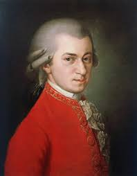
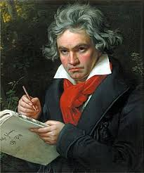
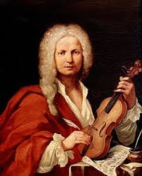

LA STORIA DELLA MUSICA CLASSICA
La storia della musica classica è un cammino millenario iniziato con i semplici canti religiosi del Medioevo, che si è poi evoluto nel Barocco di Bach e Vivaldi, con le sue complesse fughe e armonie, per arrivare al Rococò di Mozart e Haydn , introducendo decori complessi e la nascita dell’opera. Con il Classicismo di Mozarte Beethoven la musica ha raggiunto un equilibrio perfetto e ordinato, per poi trasformarsi nel Romanticismo dell’Ottocento in un’esplosione di sentimenti travolgenti e grandi orchestre guidate da geni come Chopin e Verdi. Nel Novecento la tradizione si è infine frammentata in mille esperimenti moderni, completando una trasformazione che ha portato il suono dalla spiritualità delle cattedrali alla potenza espressiva dei teatri di tutto il mondo.
Ecco cosa la rende speciale
- Strumenti: si usano strumenti “naturali” come pianoforte, violini e flauti, spesso in grandi orchestre e senza basi elettroniche.
- Spartito: tutto è scritto con estrema precisione; i musicisti seguono esattamente le note del compositore.
- Emozioni: non è musica da ballo, ma un linguaggio per raccontare gioia, tristezza e storie profonde attraverso il suono.
Si distingue per
- Complessità e struttura: basata su forme rigorose come sinfonia e sonata, con poca improvvisazione.
- Universalità: esprime le sfumature più profonde dell’animo umano, oltre il tempo e le mode.
GRANDI COMPOSITORI CLASSICI
- Wolfgang Amadeus Mozart

- Ludwig van Beethoven

- Antonio Vivaldi
